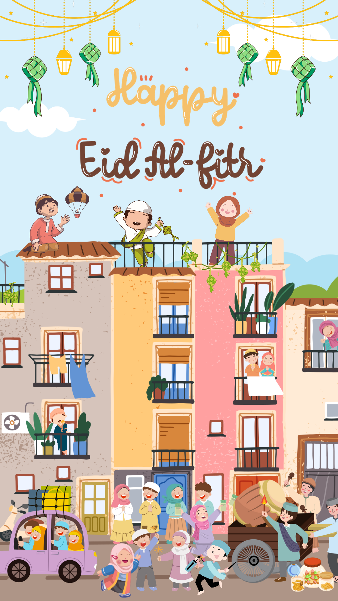

ٱلسَّلَامُ عَلَيْكُمْ وَرَحْمَةُ اللهِ وَبَرَكَاتُهُ
•
Semua
Shalat
Puasa
Ramadhan
Sedekah
Akhlak
Reset Hati, Upgrade Silaturahmi

Hadits Tidak Tersedia
Maaf, hadits untuk kategori ini belum tersedia